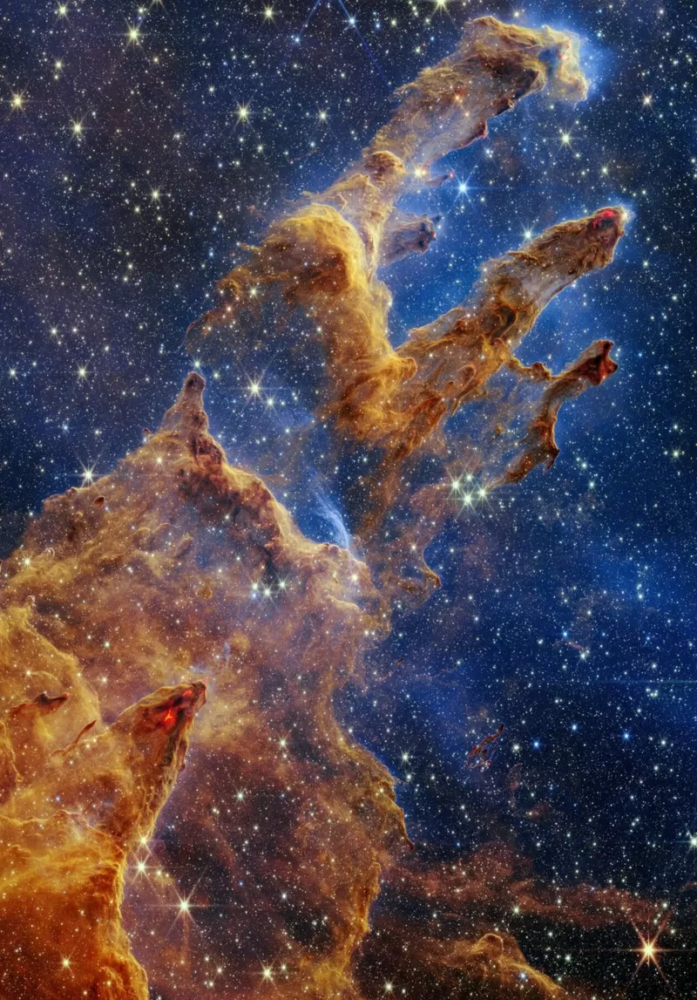

Noticias Cidade
Ciência
Data:25/10/2022.
Por: Jonathan Amos.
Telescópio James Webb: as impressionantes imagens dos 'Pilares da Criação'

Imagens dos telescópios Hubble (esq.) e Webb (dir.): os detectores infravermelhos do novo telescópio podem ver além da poeira dos pilares
Uma das vistas mais bonitas do cosmos foi visitada novamente pelo supertelescópio espacial James Webb.
Os chamados "Pilares da Criação" são nuvens densas de gás hidrogênio e poeira na constelação de Serpente, a cerca de 6.500 anos-luz da Terra.
Essa cena já foi fotografada por outros grandes telescópios. As imagens mais famosas são as do Hubble, capturadas em 1995 e 2014.
O telescópio James Webb nos deu mais uma perspectiva incrível: os pilares estão no centro do que os astrônomos chamam de Messier 16 (M16), ou Nebulosa da Águia. Esta é uma região ativa de formação de estrelas.

A vista capturada pelo Webb: os pilares são formados por hidrogênio e poeira.
O Webb, com seus detectores infravermelhos, é capaz de ver a atividade de estrelas recém-nascidas através da poeira dos pilares, que normalmente causa efeitos de dispersão de luz.
"Tenho estudado a Nebulosa da Águia desde meados da década de 1990, tentando ver 'dentro' dos pilares de anos-luz que o Hubble mostrou, procurando estrelas jovens dentro deles. Sempre soube que quando o James Webb tirasse fotos dela, seriam impressionantes. E foram mesmo", diz o professor Mark McCaughrean, consultor sênior da Agência Espacial Europeia, à BBC News.
Os pilares do M16 são iluminados e esculpidos pela intensa luz ultravioleta de massivas estrelas próximas.